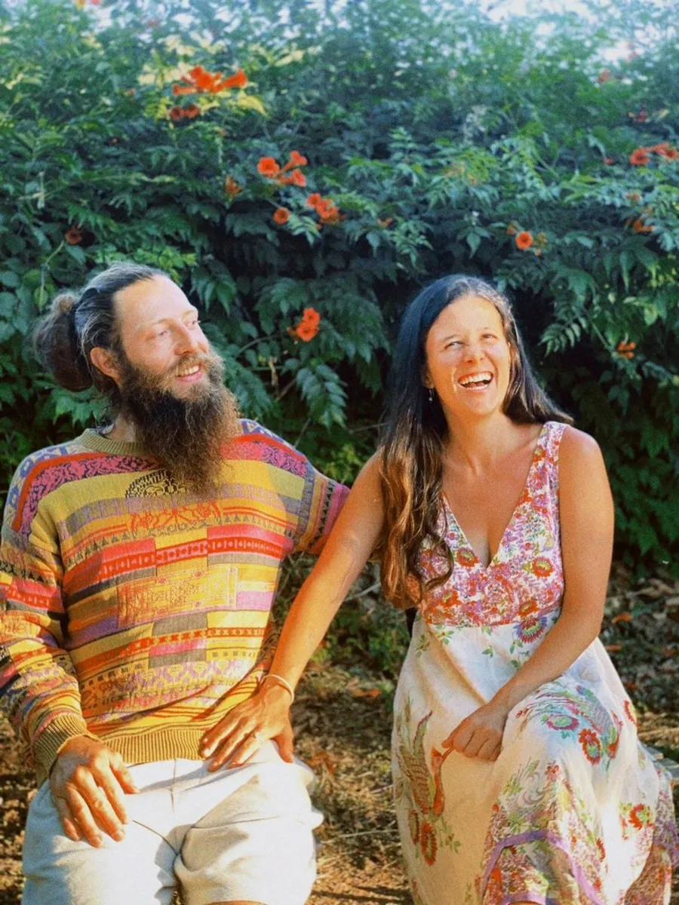

Regenerative Landscape Session
A focused online session for gardens, land, farms or retreat spaces. Share photos, maps and questions. Receive grounded first steps, priorities and a simple action plan.
Work with
Food forests, soil health, water retention, biodiversity, fire-aware design and Mediterranean resilience — for gardens, farms, retreat centres and living landscapes.

Whether you are beginning with a balcony, transforming a rural property, restoring tired soil, or dreaming of a retreat centre landscape that feeds guests and biodiversity, Benjy can help you find a clear first pathway.
This work blends practical observation, syntropic thinking, permaculture, biomass, mulch, water wisdom, plant diversity, companion planting, food forests and the Awakening Eden way: clear, grounded, joyful, sacred and sometimes wonderfully silly.
Start simple. We observe what is already alive, identify the biggest opportunities, and create practical steps you can actually begin.
A focused online session for gardens, land, farms or retreat spaces. Share photos, maps and questions. Receive grounded first steps, priorities and a simple action plan.
Planting patterns, layers, companion species, syntropic thinking, mulch systems and abundance pathways for home gardens and land projects.
Edible gardens, herbal walks, shaded circles, outdoor classrooms, biodiversity corridors and living spaces that create beauty, story and resilience.
Mulch, compost, biomass, biochar, cover crops, living roots and soil food web thinking.
Slow, spread and sink water with contours, organic matter, shade, groundcover and living edges.
Healthier, hydrated, managed landscapes with access, pruning, biomass cycling and thoughtful plant placement.
Layered edible abundance with trees, shrubs, herbs, climbers, groundcovers and support species.
Edges are often the most alive places in a landscape. Benjy’s evolving Abundant Edge approach uses observation, contour, trenches, wood, charcoal or biochar where appropriate, manure or compost, green cuttings, mulch, chop-and-drop and diverse planting to create fertile, water-holding, life-rich growing zones.
Send a few photos, your location, what you dream of creating, and what feels most challenging right now. We can begin with a simple conversation and grow from there.